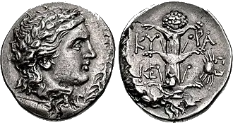
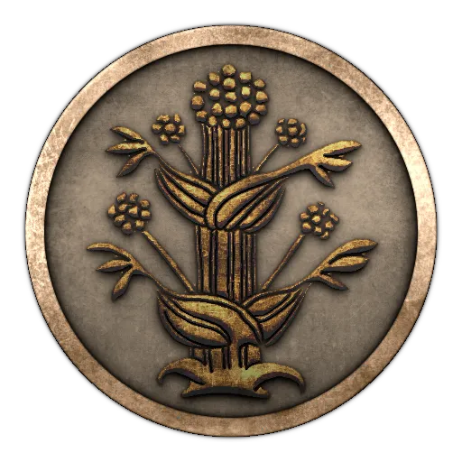
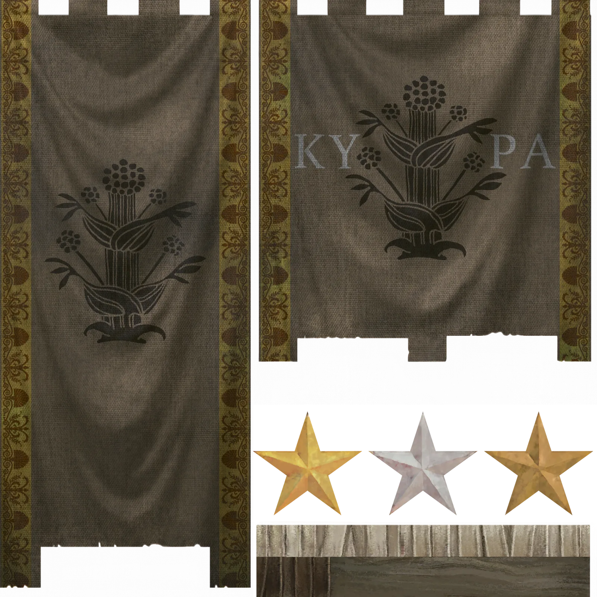
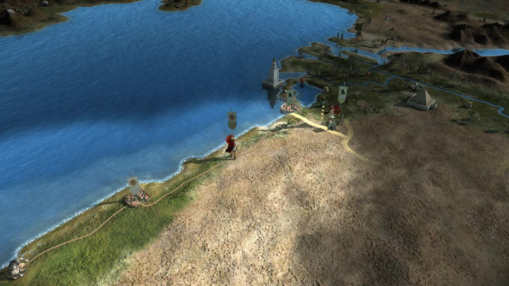
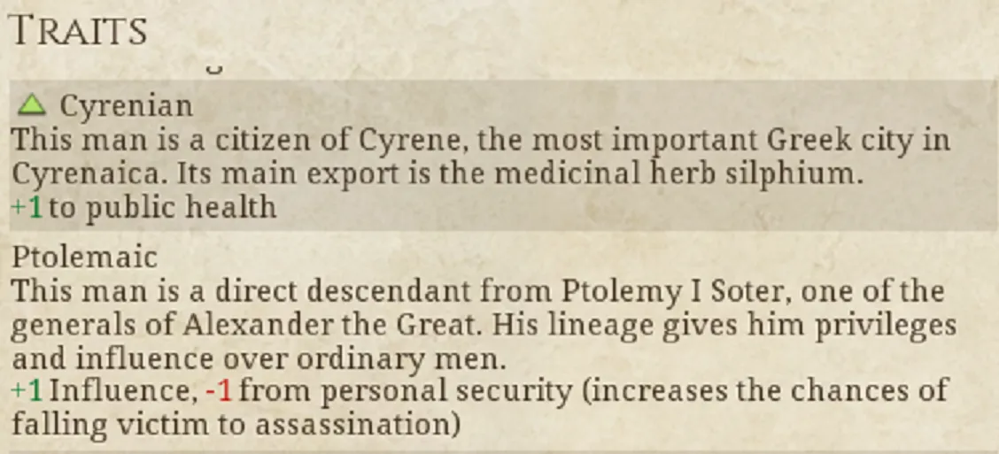
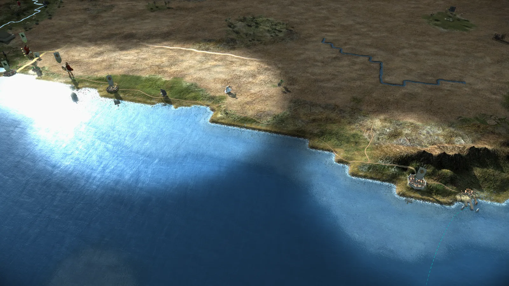

RTR: Imperium Surrectum
RTR: Imperium SurrectumKyrene
2022-01-30 · Rex Basiliscus

"This, too, I order from you: tread the way that wagons do not trample. Do not drive in the same tracks as others or on a wide road but on an untrodden path, even if yours is more narrow." – Kallimachos, *Aitia*, fr. 1.23-30
Honourable members of the Kyrenean Politeuma, all ten thousand of which are here today; the esteemed gerontes, all five hundred of our council of elders; the five chosen strategoi, nine nomophylakes, five ephores, the five nomothetai, the high priest of Apollo ... lend your ears to me this day! It has been six years since you bestowed royal powers on me, breaking faith with my wretched brother – he who calls himself Philadelphos, having bedded his own sister, after exiling his former wife and queen on charge of treason! This so-called marriage is a sacrilege to any civilized Greek, yet those who spoke against it, their only crime being to give voice to reason, have been exiled or assassinated. My late father Ptolemy would never have allowed for such a man to succeed him, had he only known his true nature.
You ask for further proof of their irreverence towards natural laws? Listen to the letters, here in my hands, both from the poet Sotades, who met with assassins' blades for this public denunciation of my brother's perfidious marriage, as well as from our exiled queen Arsinoe I, now spending her days in house arrest somewhere in upper Egypt, describing the most unnatural relations between brother and sister even before they were ultimately joined in marriage. Tales of their plotting to convict the queen of treason, of making her issue swear an oath to a new mother. I have carried these letters with me since the very start of my reign as your king, and it was because of the evidence they show that I went to war with my brother. A war you failed to support me in!
Citizens of Kyrene, of Taucheira, Euesperides, of Balagrai and Barke – for how long will you remain content with your little strip of land? Do you truly believe that a life of idle pleasures is the only one worth living? Do you truly not care for the world outside your own? Is getting rich with the silphium trade your only acceptable way of life? You neglect the outer world, except for when it is its assistance you are in need of! You pleaded with my father to save you from the tyranny of Thibron fifty years ago – he met with your exiled citizens and enacted justice upon the renegade, even respecting your laws for the rest of his reign. Many of you are here owing to my father's generosity towards your fathers! And yet they rebelled against him soon after, not once, but twice. After the second uprising, I was appointed by my father as your governor. I have been with you for thirty years now, lending an ear to your disputes, always adhering to your constitution and laws. Now, it is my name that resonates across the world – the grand kings Seleukos and Antiochos have both supported my claim to my father's throne! Have I not the right of seniority over my brother? My marriage to the Seleucid princess Apama, the daughter of king Antiochos, is a testament to that claim! From across the Greek world, I receive deputations and offers of alliances and support. Even as far away as India, their great king Sandrokottos recognizes my rule as king and offers his friendship.
Why do you still waver in your support? I have pacified the Libyans that terrified you, even making allies and partners out of them, so that you don't have to worry about uprisings as long as I am king. I have opened further trading routes across the sea and across the desert, allowing your businesses to expand threefold. I am the first king you have had in a hundred and seventy years – do I not even now merit your trust?
Know this, honourable citizens – nothing lasts. If you do not support me now in my legitimate endeavour, you will once again come under the rule of a foreigner. One who isn't worthy of being a king in the first place! Then, I fear, your privileges, your constitution, and laws, will be subject to a much harsher life than the one your philosophers' debate would be one worth living for ...
*Chaire*, everyone!
It has been a while, we know, but the next Dev Diary is here! This one coming from moscaflaca and myself, taking over from Apple this week.
If you're having breakfast, lunch, or dinner (depending on where in the world you are reading from), we wanted to season your meal with today's diary! This faction was virtually home to the ancient world's most wanted herb - silphium. Used to season food, as an aphrodisiac, in medicine, or even as a contraceptive, it was so important for the local economy that the coins often depicted the plant, which was also the basis for the faction's symbol in RIS.



Kyrene is the main city of the political union of the Greek cities of Cyrenaica (mentioned in the description above), which has for the last couple of years been led by Magas, a stepson of Ptolemy Soter, and a stepbrother to the current Ptolemaic king, Ptolemy II Philadelphos.
At the campaign start you will find yourself in a precarious position, neighbouring the Ptolemaic kingdom, having just come out of the war of brothers that ended inconclusively, as both had to turn attention to internal revolts. Your armies and economy are substantially lesser to theirs, so you will have to find a way to survive and forge your empire!

Historically though, Magas never succeeded in doing so, only managing to secure Kyrene's independence during his lifetime with a dynastic marriage of his daughter and Philadelphos' son, the future Ptolemy III.
You of course, won't have that option, as you will most likely face invasions on a regular basis. Being one of the smaller nations, directly bordering a great power, Kyrene is a tough faction to play even for an experienced Total War player ...
But in the spirit of the late Cyrenaic school of philosophy -- do not worry about happiness, as it is impossible to achieve! Your goal in life should only be avoidance of pain and sorrow ... which will be hard to achieve playing Kyrene, but at least you still have silphium for your pleasure ...


That is it for today's DD, hope you have enjoyed it. Next one is coming shortly, so be sure to check the announcements!